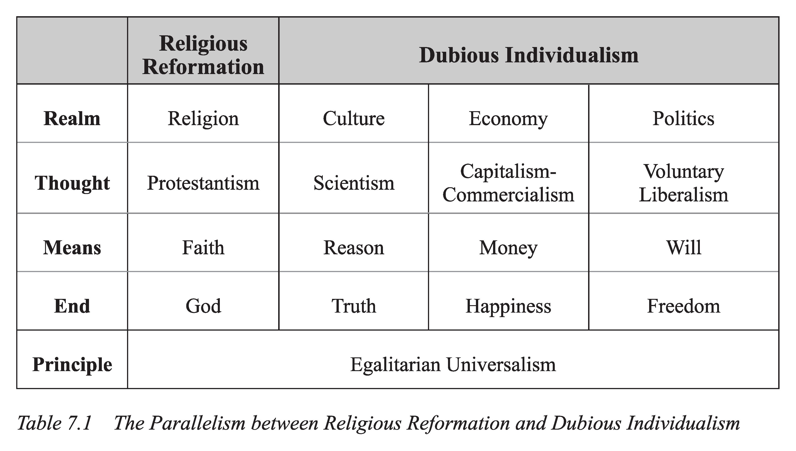
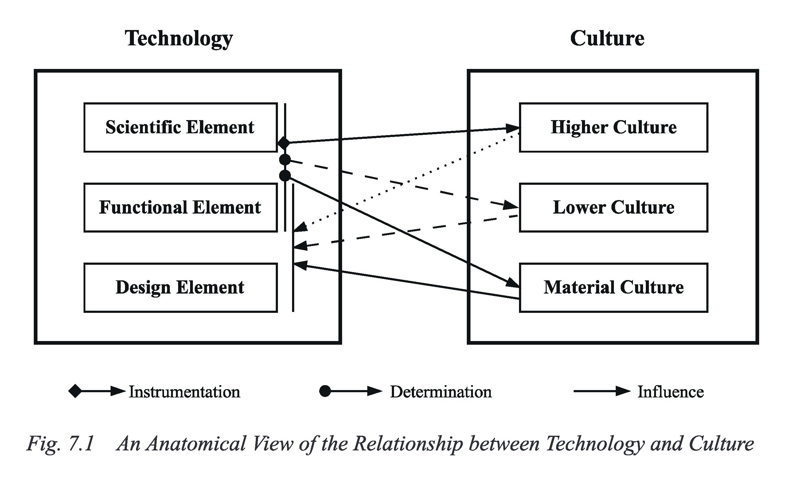
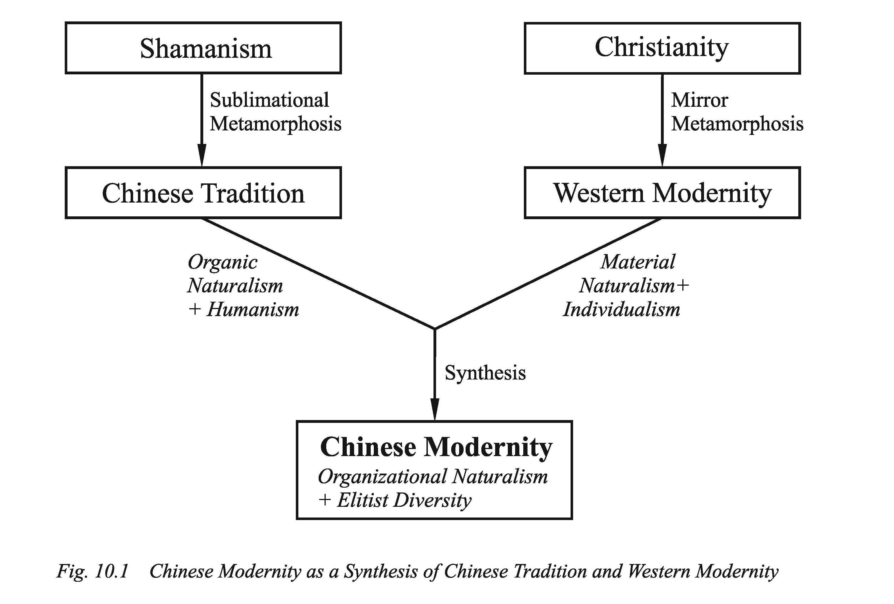
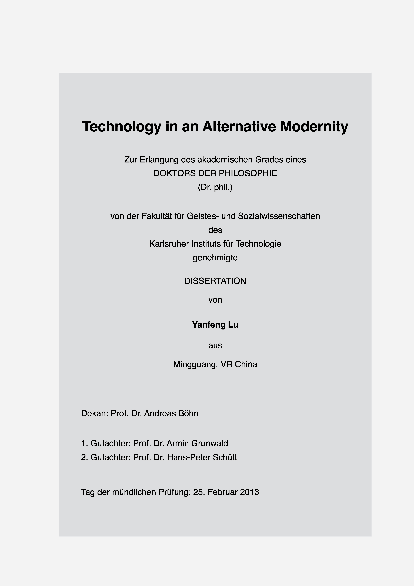

替代现代性中的技术


内容概览
全书由四个部分组成：替代现代性、技术与文化、替代现代性中的技术和案例研究。技术哲学和现代性理论是其中的两个核心内容。技术哲学是主体，现代性理论是框架。
在第一部分中，我拟定了替代现代性理论的总体框架。替代现代性指的是不同于西方现代性的现代性。显然它必须满足两个条件：替代现代性首先必须是现代性，具有现代性的必要特征；其次，替代现代性与西方现代性必须有实质的区别。
由于西方现代性目前是唯一发展成型的现代性，我们建构替代现代性必须以西方现代性为参照。现代性的必要特征需要从西方现代性提取，替代的特性也要以西方现代性为参照。因此，对西方现代性中的不同要素如何做取舍，是建构替代现代性的关键。
在中国近现代的思想历史上，学者们提出了不同的中国现代性方案，从张之洞的“中体西用”到李泽厚的“西体中用”。这些都是对西方现代性做取舍的努力。我的替代现代性理论是这种努力的延续。与前人不同的是，我试图对西方现代性做更加深入的解构，对其中的文化要素做更加细致的考察。
著作的第一章是要明确现代性的必要特征。我从西方现代性中提取的现代性必要特征包括两个：个人主义和工业化。工业化，即从农业主导向工业主导的转变，是现代社会的物质经济基础。没有这个基础，一个社会不能成其为现代社会。“个人主义”这个词需要加以限制。我这里指的是个人社会地位的提升。这是现代社会在政治体制方面的必要变革。在传统社会中，不论在中国还是西方，普通个人的地位都很卑微，在社会体制中位置低下。在现代社会中，普通的个人开始受到尊重。后面我把西方现代的极端个人主义称为虚假个人主义（Dubious Individualism）,以示区别。
在提取了现代性的必要特征之后，第二章进一步明确西方现代性的特殊属性。我把科学主义、资本主义-商业主义和作为民主政治基础的意志自由主义都看作西方现代性的特殊属性。说它们特殊，是因为它们都源自西方主导的基督教文化。现代科学的物质宇宙观念源自基督教世界观念的蜕变，现代经济政治中的原子个人主义源自基督教改革。

总的来说，工业和个人社会地位提升是西方现代性中普适的要素。任何一个人类文明或社会想现代化，都必须具备这两个要素。相反，科学主义、资本主义-商业主义和意志自由主义，都是西方基督教文化特有的东西。是西方之外的国家建构自己的现代性时需要克服的要素。
这种对西方现代性中不同文化要素的取舍，远远超出简单的体用之分。建构中国现代性需要创造崭新的体和用，在中国传统文化中和西方现代文化中都没有现成的东西可以简单地拿来。
著作的第二部分是微观的技术理论。在第三章中，我分析了技术的三个要素：科学要素、设计要素和功能要素，并由此提出对技术的三维刻画。在这个三维刻画的基础上第四章和第五章分别对传统的和现代的技术理论进行了分析。
人类技术理论的发展经历了明确的三个阶段，这三个阶段与整个人类历史的发展有着清晰的对应关系。在前现代社会中，技术一直处于从属的地位。技术总体上被看作实现某种功能，满足人类某种需要的工具。这种技术观念被称为常识性工具主义。工业革命之后，技术对社会的影响达到空前的程度。于是人们形成了技术可以决定一切的观念。这是所谓的技术决定论。进入二十世纪，尤其是两次世界大战之后，人们对技术的态度由极度乐感转为悲观。此后，人们开始对技术做深入的考察，在这个过程中揭示了技术的深层文化背景。这形成了多个现代的技术理论。几个有代表性的观点是Feenberg的不确定性理论、Ihde的模糊性理论和Winner的技术政治论。
针对所有这些已有的技术理论，我都运用我的技术三维刻画理论对它们做了细致解析。
著作的第三部分是宏观的技术理论。它聚焦在技术与文化的宏观关系，以及技术在现代社会中的地位上。
在这个宏观层面上的两个流行的观点是技术悲观论和技术万能论。技术悲观论受到两次世界大战的很大影响，代表性的理论大都建立于二战前后不久。技术万能论是十九世纪技术决定论的现代版，它的基础是二战之后现代技术的长足进步。到目前，技术悲观论和技术万能论甚至从对立发展到交融的阶段。人们对当前AI技术的态度就是一个突出的例子。有些人一方面相信AI的超人潜力，也正是因为这样对AI技术产生了悲观的情绪。Hinton是一个明显的代表。原先技术万能论和技术悲观论是正反对立的立场，现在正的方面走到极端，直接变成负的一面。
西方文化时常让人爱走极端。阴阳大化、物极必反，因此中国人努力地冥极守中。
在第三部分中我对技术悲观论和技术万能论分别做了批判性考察。这分别是第七章和第八章的主体内容。但是在第六章中我通过对近期摄影领域中两场技术革命的分析，初步展示了我对现代技术的基本立场。我把这称为拥抱和控制立场（Embracing-Controlling-Stance）。一言以蔽之，我们对待现代技术一方面要全心地拥抱，另一方面又要对其做必要的控制，认识它的局限，避免它的危害。这是冥极守中原则的具体应用。
第七章中考察的代表性技术悲观论观点包括海德格尔的Ge-stell（这个德语词没法翻译）、Ellul的效率主导、马尔库塞的单向度思维和伯格曼的设备范式。我把它们统称为Dystopian Substantivism（末日的实体主义）。实体主义这种说法取自Feenberg，它把现代技术看作现代社会的实体，认为现代技术对社会有主导性的作用。针对每种理论我都试图揭示，它们归罪于现代技术的问题，不论是把自然当作一个资源库、效率主导、单向度思维，还是对现代设备功能外要素的漠不关心，都有着西方文化的背景。换句话说，现代社会的种种问题不是现代技术带来的，而是西方现代文化带来的。
第八章在批判Utopian Fetishism（乌托邦拜物教）的基础上讨论了技术控制的两个具体的理论。乌托邦拜物教是现代科技垄断的基础。认为科学的方法可以研究一切现象，技术可以解决一切问题，机器具有超人的神奇魔力，这实质上是远古拜物教的现代翻版。上古时期中国人相信玉石具有灵性，拥有神奇的魔力。目前仍然有许多人相信机器具有灵性，拥有超人的魔力。程度不同、形式不同，实质却无异。在对现代科学的物质宇宙观做批判性考察的同时，无疑我会对AI原教旨观点进行批判，因为在AI中拜物教得到最好体现。在这个过程中，我借用了Dreyfus的基本观点。技术控制的两个理论分别是环境伦理学与技术评估和监管。
对现代技术的拥抱和控制立场的建立，一方面有赖于对上述两个极端观点的批判，另一方面以新的技术理论为基础。在第二部分中的微观技术理论和对现有技术理论进行解析的基础上，在第三部分中我进一步建立了宏观技术理论。我把它称为“文化工具主义”。文化工具主义通过对不同技术要素和不同文化层次的解析，把所有现有的技术理论包含在其中。具体来说，技术的科学和功能要素对物质文化有很大的决定作用，对大众文化有较少的决定作用，对高雅文化来说只是工具；反过来，物质文化对技术的功能和设计有很大的影响，大众文化有较小的影响，高雅文化有些微的影响。

在第四部分，我把上述的技术理论和现代性理论运用到四个案例中。四个案例明确分为两组：前两个关涉中国，后两个关涉具体技术。
第一个传统中国的案例意在揭示，拥抱和控制的立场原本就是传统中国的基本技术立场。一方面，技术在传统中国得到了很好的发展。李约瑟对中国古代科技的系统研究揭示了中国古代技术的长期领先地位。另一方面，技术在传统中国一直处于从属的地位，居于中华传统文化核心的是文、史、哲等人文领域。
在现代中国的案例中，我首先揭示出，在西方的猛烈冲击之下，中国的技术立场如何从晚清的传统立场（“师夷之长技以制夷”），经由新文化运动，一步一步陷入科技垄断的局面。现代科技学到了，甚至现在在许多领域已经开始超越老师，然而中华文化的人文核心却丧失了。
因此，中华文化的复兴主要不在恢复科技领先地位，而是恢复人文核心地位。中国现代性的建构需要发生在更加基础的层面上。在第十章的第二节，我把第一部分中的替代现代性理论运用到中国。建构中国现代性的关键是以中华文化的人文核心为本位，融合西方现代的自然主义和个人主义要素。

最后两章中现代医疗技术和信息技术的案例意在表明，在具体的现代技术中如何运用拥抱和控制的立场。信息技术在十几年之后已经发展到今天的AI时代。我们目前应如何对待AI的发展？是由于其可能带来的危害，完全禁止其发展？还是由于其巨大的潜力，毫无限制地任其发展？

我博士著作的写作主要发生在2011/12年间，2013年初完成答辩。十几年后，书中的议题仍然是当下的问题。再过几十年，书中的许多话题仍然需要继续讨论。